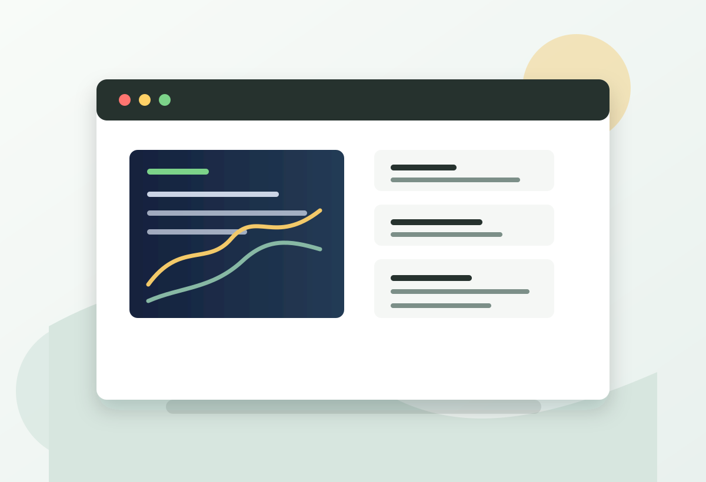

Machine learning engineer at Amazon
Jane Du writes about building ML systems that earn their keep.
Field notes on recommendation systems, model evaluation, distributed training, data quality, and the unglamorous craft of making models reliable in production.

Latest writing
Practical essays for ML engineers
When an offline metric lies, look at the join keys first
A debugging checklist for model improvements that look beautiful in notebooks and disappear the moment they meet real traffic.
Read essayDesigning feature stores for humans under deadline
Naming, freshness, lineage, and ownership choices that keep feature reuse from becoming an archeology project.
Read essayA gentle case for adversarial validation
Before tuning another hyperparameter, ask whether your training and serving populations still recognize each other.
Read essayThe senior engineer's job is often removing ambiguity
Notes on writing crisp technical docs, choosing reversible decisions, and helping teams move without pretending uncertainty is gone.
Read essayWork
What Jane builds
Production recommendation systems
Modeling, ranking, retrieval, and experimentation for high-scale customer experiences.
ML platform ergonomics
Tooling and conventions that let teams ship models with clearer ownership and fewer surprises.
Reliable evaluation
Metric design, slicing, data quality checks, and launch reviews that expose risk early.
About Jane
Engineer, writer, and careful translator between models and products.
I am a software engineer (machine learning path) at Amazon, writing for builders who care about the last mile: the details between a promising model and a dependable system. My favorite posts usually begin with a messy production question and end with a simpler way to reason about it.
Stay in touch